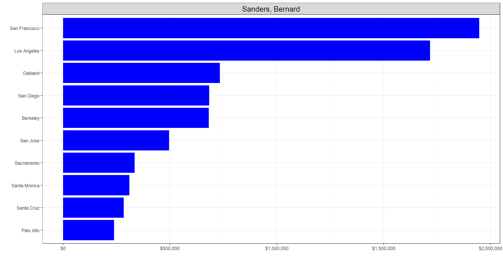
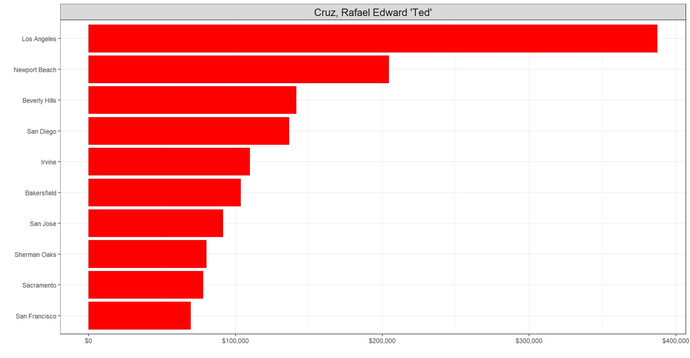

CA_2016 <- vroom::vroom(here::here("data", "CA_contributors_2016.csv")) %>%
clean_names()#Highest individual contributions
CA_2016 %>%
arrange(desc(contb_receipt_amt))## # A tibble: 1,292,843 x 4
## cand_nm contb_receipt_amt zip contb_date
## <chr> <dbl> <dbl> <date>
## 1 Walker, Scott 10800 90680 2015-07-07
## 2 Walker, Scott 10800 92677 2015-07-06
## 3 Cruz, Rafael Edward 'Ted' 10800 91604 2015-12-21
## 4 Cruz, Rafael Edward 'Ted' 10800 93401 2015-06-12
## 5 Cruz, Rafael Edward 'Ted' 10800 90024 2015-06-24
## 6 Cruz, Rafael Edward 'Ted' 10800 90034 2015-12-08
## 7 Cruz, Rafael Edward 'Ted' 10800 93013 2015-12-31
## 8 Cruz, Rafael Edward 'Ted' 10800 90211 2015-12-21
## 9 Cruz, Rafael Edward 'Ted' 10800 90036 2015-12-17
## 10 Cruz, Rafael Edward 'Ted' 10800 92091 2015-12-14
## # ... with 1,292,833 more rows#Loading Zip files
Zip <- vroom::vroom(here::here("data", "zip_code_database.csv"))
Zip## # A tibble: 42,522 x 16
## zip type primary_city acceptable_citi~ unacceptable_ci~ state county
## <chr> <chr> <chr> <chr> <chr> <chr> <chr>
## 1 00501 UNIQ~ Holtsville <NA> I R S Service C~ NY Suffo~
## 2 00544 UNIQ~ Holtsville <NA> Irs Service Cen~ NY Suffo~
## 3 00601 STAN~ Adjuntas <NA> Colinas Del Gig~ PR Adjun~
## 4 00602 STAN~ Aguada <NA> Alts De Aguada,~ PR <NA>
## 5 00603 STAN~ Aguadilla Ramey Bda Caban, Bda ~ PR Aguad~
## 6 00604 PO B~ Aguadilla Ramey <NA> PR <NA>
## 7 00605 PO B~ Aguadilla <NA> <NA> PR <NA>
## 8 00606 STAN~ Maricao <NA> Urb San Juan Ba~ PR Maric~
## 9 00610 STAN~ Anasco <NA> Brisas De Anasc~ PR <NA>
## 10 00611 PO B~ Angeles <NA> <NA> PR <NA>
## # ... with 42,512 more rows, and 9 more variables: timezone <chr>,
## # area_codes <dbl>, latitude <dbl>, longitude <dbl>, world_region <chr>,
## # country <chr>, decommissioned <dbl>, estimated_population <dbl>,
## # notes <chr>my_zip <- Zip[,c(1,3)]
my_CA_2016 <- merge(CA_2016, my_zip, by = "zip", all.x=TRUE)###1 Clinton
Clinton <- my_CA_2016 %>% filter(cand_nm == "Clinton, Hillary Rodham") %>% group_by(primary_city) %>% summarise(tot_cont = sum(contb_receipt_amt)) %>% arrange(desc(tot_cont))
p_clinton <- ggplot(Clinton[1:10,], aes(x = tot_cont, y = reorder(primary_city, tot_cont))) + geom_bar(stat="identity", fill="blue") + scale_x_continuous(labels=scales::dollar_format()) + labs(x="", y="") + theme_bw() + theme(plot.title = element_text(hjust = 0.5)) + facet_wrap(~"Clinton, Hillary Rodham")+ theme(strip.text =element_text(size=14))
p_clinton
###2 Sanders
Sanders <- my_CA_2016 %>% filter(cand_nm == "Sanders, Bernard") %>% group_by(primary_city) %>% summarise(tot_cont = sum(contb_receipt_amt)) %>% arrange(desc(tot_cont))
p_sanders <- ggplot(Sanders[1:10,], aes(x = tot_cont, y = reorder(primary_city, tot_cont))) + geom_bar(stat="identity", fill="blue") + scale_x_continuous(labels=scales::dollar_format()) + labs(x = "", y = "") + theme_bw() + theme(plot.title = element_text(hjust = 0.5)) + facet_wrap(~"Sanders, Bernard")+ theme(strip.text =element_text(size=14))
p_sanders
###3 Trump
Trump <- my_CA_2016 %>% filter(cand_nm == "Trump, Donald J.") %>% group_by(primary_city) %>% summarise(tot_cont = sum(contb_receipt_amt)) %>% arrange(desc(tot_cont))
p_trump <- ggplot(Trump[1:10,], aes(x = tot_cont, y = reorder(primary_city, tot_cont))) + geom_bar(stat="identity", fill="red") + scale_x_continuous(labels=scales::dollar_format()) + labs(x="", y="") + theme_bw() + theme(plot.title = element_text(hjust = 0.5)) + facet_wrap(~"Trump, Donald J.")+ theme(strip.text =element_text(size=14))
p_trump
###4 Cruz
Cruz <- my_CA_2016 %>% filter(cand_nm == "Cruz, Rafael Edward 'Ted'") %>% group_by(primary_city) %>% summarise(tot_cont = sum(contb_receipt_amt)) %>% arrange(desc(tot_cont))
p_cruz <- ggplot(Cruz[1:10,], aes(x = tot_cont, y = reorder(primary_city, tot_cont))) + geom_bar(stat="identity", fill="red") + scale_x_continuous(labels=scales::dollar_format()) + labs(x="", y="") + theme_bw() + theme(plot.title = element_text(hjust = 0.5)) + facet_wrap(~"Cruz, Rafael Edward 'Ted'")+ theme(strip.text =element_text(size=14))
p_cruz
###5 Rubio
Rubio <- my_CA_2016 %>% filter(cand_nm == "Rubio, Marco") %>% group_by(primary_city) %>% summarise(tot_cont = sum(contb_receipt_amt)) %>% arrange(desc(tot_cont))
p_rubio <- ggplot(Clinton[1:10,], aes(x = tot_cont, y = reorder(primary_city, tot_cont))) + geom_bar(stat="identity", fill="red") + scale_x_continuous(labels=scales::dollar_format()) + labs(x="", y="") + theme_bw() + theme(plot.title = element_text(hjust = 0.5)) + facet_wrap(~"Rubio, Marco")+ theme(strip.text =element_text(size=14))
p_rubio
###6 Bush
Bush <- my_CA_2016 %>% filter(cand_nm == "Bush, Jeb") %>% group_by(primary_city) %>% summarise(tot_cont = sum(contb_receipt_amt)) %>% arrange(desc(tot_cont))
p_bush <- ggplot(Clinton[1:10,], aes(x = tot_cont, y = reorder(primary_city, tot_cont))) + geom_bar(stat="identity", fill="red") + scale_x_continuous(labels=scales::dollar_format()) + labs(x="", y="") + theme_bw() + theme(plot.title = element_text(hjust = 0.5)) + facet_wrap(~"Bush, Jeb") + theme(strip.text =element_text(size=14))
p_bush
###7 Carson
Carson <- my_CA_2016 %>% filter(cand_nm == "Carson, Benjamin S.") %>% group_by(primary_city) %>% summarise(tot_cont = sum(contb_receipt_amt)) %>% arrange(desc(tot_cont))
p_carson <- ggplot(Clinton[1:10,], aes(x = tot_cont, y = reorder(primary_city, tot_cont))) + geom_bar(stat="identity", fill="red") + scale_x_continuous(labels=scales::dollar_format()) + labs(x="", y="") + theme_bw() + theme(plot.title = element_text(hjust = 0.5)) + facet_wrap(~"Carson, Benjamin S.")+ theme(strip.text =element_text(size=14))
p_carson
###8 Kasich
Kasich <- my_CA_2016 %>% filter(cand_nm == "Kasich, John R.") %>% group_by(primary_city) %>% summarise(tot_cont = sum(contb_receipt_amt)) %>% arrange(desc(tot_cont))
p_kasich <- ggplot(Kasich[1:10,], aes(x = tot_cont, y = reorder(primary_city, tot_cont))) + geom_bar(stat="identity", fill="red") + scale_x_continuous(labels=scales::dollar_format()) + labs(x="", y="") + theme_bw() + theme(plot.title = element_text(hjust = 0.5)) + facet_wrap(~"Kasich, John R.")+ theme(strip.text =element_text(size=14))
p_kasich
###9 Fiorina
Fiorina <- my_CA_2016 %>% filter(cand_nm == "Fiorina, Carly") %>% group_by(primary_city) %>% summarise(tot_cont = sum(contb_receipt_amt)) %>% arrange(desc(tot_cont))
p_fiorina <- ggplot(Clinton[1:10,], aes(x = tot_cont, y = reorder(primary_city, tot_cont))) + geom_bar(stat="identity", fill= "red") + scale_x_continuous(labels=scales::dollar_format()) + labs(x="", y="") + theme_bw() + theme(plot.title = element_text(hjust = 0.5)) + facet_wrap(~"Fiorina, Carly")+ theme(strip.text =element_text(size=14))
p_fiorina
###10 Paul
Paul <- my_CA_2016 %>% filter(cand_nm == "Paul, Rand") %>% group_by(primary_city) %>% summarise(tot_cont = sum(contb_receipt_amt)) %>% arrange(desc(tot_cont))
p_paul <- ggplot(Paul[1:10,], aes(x = tot_cont, y = reorder(primary_city, tot_cont))) + geom_bar(stat="identity", fill="red") + scale_x_continuous(labels=scales::dollar_format()) + labs(x="", y="") + theme_bw() + theme(plot.title = element_text(hjust = 0.5)) + facet_wrap(~"Paul, Rand") + theme(strip.text =element_text(size=14))
p_paul## Placing plots together
p_final <- (p_clinton | p_sanders | p_trump | p_cruz | p_rubio) / (p_bush | p_carson | p_kasich | p_fiorina | p_paul) + plot_annotation(title = "Where did candidates raise most money?", theme=theme(plot.title = element_text(size = 20, face="bold"))) + plot_annotation(caption = "Amount raised", theme=theme(plot.caption = element_text(size = 16, face="bold", hjust = 0.5))) + facet_wrap(~"Clinton, Hillary Rodham")+ theme(strip.text =element_text(size=16))
p_final